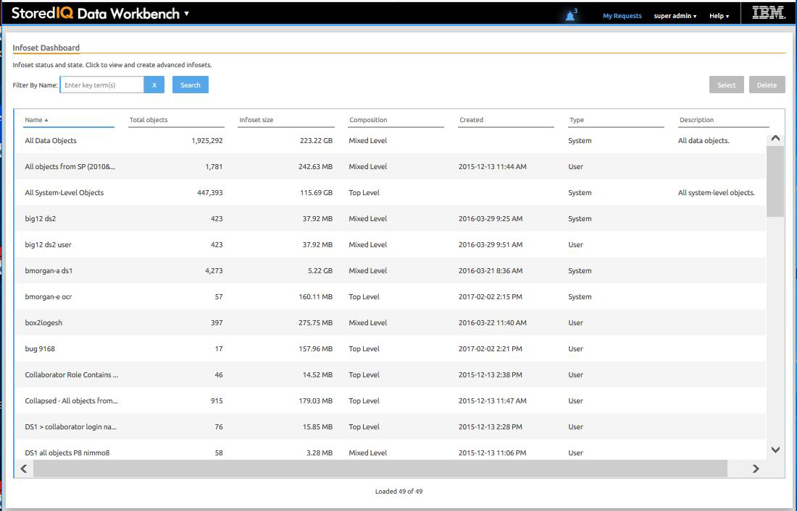

Big data is a pervasive problem, not a one-time occurrence. It is easy for most
companies to realize that big data is problematic, but it is hard to identify what problems
they have. Big data is all about the unknown, but the unknown cannot be off limits. IBM
StoredIQ Data Workbench can help you learn about your data, make educated decisions with
your most valuable asset, and turn your company's most dangerous risk into its most valuable
asset.

Big data is a pervasive problem, not a one-time occurrence. It is easy for most companies
to realize that big data is problematic, but it is hard to identify what problems they
have. Big data is all about the unknown, but the unknown cannot be off limits. IBM
StoredIQ Data Workbench can help you learn about your data, make educated decisions with
your most valuable asset, and turn your company's most dangerous risk into its most
valuable asset. Here are just some examples of how you can use IBM StoredIQ Data
Workbench.
You need to find all company email that is sent from or received by Eileen Sideways
(esideways@thecompany.com). You can use IBM StoredIQ Data Workbench to find all email
and then copy that data to a predefined repository. You can also use IBM StoredIQ Data
Workbench to find all of the esideways@thecompany.com email that occurred between
specific dates and then make that email available for review.
As an administrator, you want to rid your networks and storage of unused data. You
can use IBM StoredIQ Data Workbench to find all files that were not modified in more
than five years.
You want to find all image files that are created in 2007. Not only can IBM
StoredIQ Data Workbench find all image files that were created in 2007. It also shows
how much space they occupy on your network.
A user needs to understand how data about Windows is being retained. Using IBM
StoredIQ Data Workbench, you can provide that user with a visual overview of the number
of objects that are retained and a breakdown of files per data source. Additionally, you
can apply overlays to show the user if those files contain forbidden information such as
credit-card numbers or Social Security numbers.
If IBM StoredIQ is configured accordingly, you can select the infosets and filters
that are published to the governance catalog for unified governance of structured and
unstructured information. When integrating with Information Governance Catalog, you can
also analyze and classify the data governed by IBM StoredIQ based on the data classes
that are synchronized from the governance catalog.